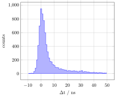

Cherenkov times
In this example, we will pick the best reconstructed muon (from the Jpp muon reconstruction chain JMuon) in each event and calculate the Cherenkov hit time residuals for each triggered hit.
We open the a sample file from the KM3NeTTestData package:
using KM3io, KM3NeTTestData
f = ROOTFile(datapath("offline", "mcv6.0.gsg_muon_highE-CC_50-500GeV.km3sim.jterbr00008357.jorcarec.aanet.905.root"))ROOTFile{OfflineTree (140 events)}Each event holds a vector of reconstructed tracks (Vector{Trk}) behind the .trks field. This vector contains different stages of reconstruction results from a variety of reconstruction algorithms (JMuon, JShower, aashower etc.). KM3io.jl exports helper functions to pick the best reconstructed track for a given reconstruction algorithm. The logic is based on the reference implementation in KM3NeT DataFormat tools. The function bestjppmuon() can be used to select the best reconstructed JMuon for a given event:
evt = f.offline[1]
best_muon = bestjppmuon(evt)Trk (Reconstructed track)
id: 1
pos: Position{Float64}(472.387, 526.142, 198.522)
dir: Direction{Float64}(0.141, 0.986, 0.087)
t: 5.8796099548102595e7
E: 544.9525806125414
len: 0.0
lik: 40.55672709261793
rec_type: 4000
rec_stages: Int32[1, 2, 5, 3, 5, 4]
fitinf: FitInformation([0.014885871185356527, 0.010385140089653992, -40.55672709261793, 21.0, 544.9525806125414, 62.53353460788458, 3.9927948910593534, 14.0, 0.0, 8.658344340729155, 45.03600640024326, 0.0, 0.0, 1501.6459845444228, -60.9373245973645, 602.0, 18.0])We now use this track as a seed to calculate the Cherenkov photon (see CherenkovPhoton) parameters using cherenkov() for each hit triggered hit in the event. To select only triggered hits, we use the triggered() function together withe filter() which returns a new vector of triggered hits:
cherenkov(best_muon, filter(triggered, evt.hits))18-element Vector{CherenkovPhoton}:
CherenkovPhoton(27.456056524385705, 40.873619315665835, 23.01132932189433, 5.879636441354458e7, -3.3185445815324783, -0.6308750235550006, Direction{Float64}(-0.528, 0.839, -0.133))
CherenkovPhoton(19.589541083469918, 29.162798528739554, 34.066894977706106, 5.879634739559217e7, -3.233592174947262, -0.5615835242962758, Direction{Float64}(-0.103, 0.816, -0.569))
CherenkovPhoton(10.86335249693415, 16.17218896884205, 44.610162820726465, 5.879632277897501e7, -13.470975004136562, -0.7747565822537275, Direction{Float64}(-0.274, 0.833, -0.481))
CherenkovPhoton(10.958658115674492, 16.31406970745347, 44.59234480366246, 5.879632337250174e7, -12.580501735210419, -0.12671424342178933, Direction{Float64}(-0.270, 0.832, -0.484))
CherenkovPhoton(10.944182695875304, 16.29252026178632, 44.40568465253136, 5.879632265069598e7, 3.0913040190935135, -0.9323746132442533, Direction{Float64}(-0.281, 0.833, -0.476))
CherenkovPhoton(11.17928745250317, 16.642518897357846, 44.22007515662778, 5.8796323642327406e7, 15.824672594666481, 0.13091951330569712, Direction{Float64}(-0.282, 0.833, -0.476))
CherenkovPhoton(10.90295605293336, 16.23114647681559, 44.79747555408915, 5.8796323675116315e7, 23.333883680403233, 0.21074029444645023, Direction{Float64}(-0.280, 0.833, -0.477))
CherenkovPhoton(10.834690812223172, 16.129520540155593, 44.741227103812335, 5.879632301979044e7, 35.40920955687761, -0.5058063194444712, Direction{Float64}(-0.276, 0.833, -0.480))
CherenkovPhoton(38.84032185176909, 57.82128719239538, -7.3748303011806655, 5.879634105250908e7, 2.452490918338299, -0.869871832680696, Direction{Float64}(-0.498, 0.841, -0.212))
CherenkovPhoton(28.22562353198971, 42.01926777682648, 4.187186042072117, 5.879630689544618e7, 0.01255381852388382, 0.01080998510609144, Direction{Float64}(-0.205, 0.827, -0.524))
CherenkovPhoton(14.785344110263079, 22.01082759562596, 20.557497574678035, 5.8796269418408036e7, 1.031591959297657, -0.8687222096306455, Direction{Float64}(-0.495, 0.841, -0.216))
CherenkovPhoton(14.88094434135218, 22.153146921365803, 20.51061784167785, 5.879626991701378e7, 6.563986226916313, -0.3270806917438915, Direction{Float64}(-0.494, 0.841, -0.220))
CherenkovPhoton(15.035038797101658, 22.382546147629952, 20.413422353617566, 5.8796270648541935e7, 10.363458067178726, 0.45681008948052304, Direction{Float64}(-0.495, 0.841, -0.217))
CherenkovPhoton(35.48962576204839, 52.8331317997193, -2.014094840107113, 5.879633597758977e7, 1.9564102292060852, -0.4138351012632555, Direction{Float64}(0.234, 0.770, -0.594))
CherenkovPhoton(35.32252555236435, 52.58437100801102, -1.7938275339033325, 5.879633556747952e7, 3.269520476460457, -0.8429145215271237, Direction{Float64}(0.235, 0.770, -0.594))
CherenkovPhoton(25.877763469142074, 38.52402663285318, 9.45499183787367, 5.8796308381212674e7, -0.5812126770615578, -0.9686719491474437, Direction{Float64}(0.275, 0.763, -0.585))
CherenkovPhoton(26.084505456694867, 38.83180183313701, 9.19462645688342, 5.8796308929165296e7, 2.361834704875946, -0.39414201377088814, Direction{Float64}(0.278, 0.763, -0.584))
CherenkovPhoton(17.507053914837176, 26.062615963014814, 19.40524417300149, 5.8796284221979275e7, 1.8830207213759422, -0.9165095376090588, Direction{Float64}(0.355, 0.749, -0.559))To obtain more statistics, we iterate through all the events and calculate the Cherenkov time residuals for each set of hits based on the best reconstruction track. We fill the time residuals in a 1D histogram using the FHist package.
This example uses PGFPlotsX which is a wrapper for the LaTeX library PGFPlots. Feel free to adapt the example to use your favourite plotting library.
using KM3io, KM3NeTTestData
using FHist
using PGFPlotsX
f = ROOTFile(datapath("offline", "mcv6.0.gsg_muon_highE-CC_50-500GeV.km3sim.jterbr00008357.jorcarec.aanet.905.root"))
Δts = Hist1D(; counttype=Int, binedges=-10:50)
for evt ∈ f.offline
m = bestjppmuon(evt)
cherenkov_photons = cherenkov(m, filter(triggered, evt.hits))
for cp ∈ cherenkov_photons
push!(Δts, cp.Δt)
end
end
axis = @pgf Axis(
{
ybar, const_plot, grid,
xlabel=raw"\Delta t / ns",
ylabel="counts",
},
PlotInc(Coordinates(bincenters(Δts), bincounts(Δts)), raw"\closedcycle")
)
axis